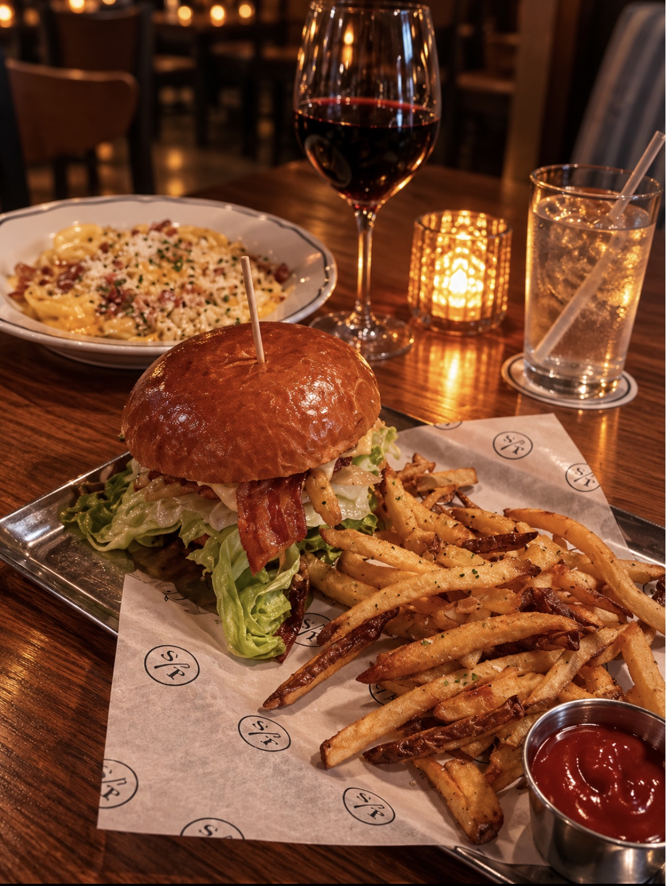

Take It All Away Then
In almost every leadership seminar, the chat fills with the same words: overwhelmed, lost, no direction. If AI took your job tomorrow, who would still be standing there?
Rare sighting, Austin, Texas
Curious by nature, bold by choice, and driven by a belief that the best ideas, experiences, and joys in life are meant to be shared. Oh and a little AI-pilled.

In almost every leadership seminar, the chat fills with the same words: overwhelmed, lost, no direction. If AI took your job tomorrow, who would still be standing there?

Authors are starting to tell readers how they used AI. It made me wonder what we're actually afraid of losing, and what we'll never get to read because AI got there first.

I took myself out to dinner to celebrate a small act of courage, and somewhere between the wine and dessert, I found my way back to my dad at the grocery checkout.

At Austin Tech Week I walked into rooms full of strangers and walked out with a community. Why the people around you are the fastest way to learn.
Leads GenAI enablement at Applied Materials and builds the Champions Network that teaches it forward.
Prosci ADKAR certified, which means she studies how people move from curious to capable.
Keynote speaker at the Forrester IT conference, where the audience got a fabulous dose of human magic.
Every tool we build is only as magical as the human holding it.
Margin is where life happens.
Want to talk about a post, invite me to speak, or just say hi? I'd love to hear from you.